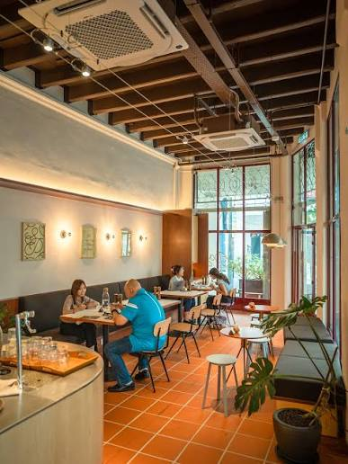

KOPI ROTI CAFE
Our cafe sells premium coffee and delicious pastry for our beloved customers.
Our menu/Services
- Express Double Shot
- A concentrated & aromatic shot of pure coffee, freshly brewed using premium Arabica beans : RM8.50
- Caffe Latte
- A smooth balance of rich espresso and steamed creamy milk, topped with a layer of beautiful latte art. : RM 12.00
- Butter Croissant
- A classic French pastry that is flaky and crispy on the outside, yet soft and buttery on the inside. Served warm. : RM 7.00
- Burnt Cheesecake
- Basque-style cheesecake baked with a beautifully charred top for a rich caramel flavor, featuring a creamy center : RM 15.00
How to Order
- Find a cozy spot and scan the QR code on your table to view the digital menu.
- Place your order and make a secure payment directly through your phone.
- Relax and chat while our baristas freshly prepare your coffee and treats.
- Enjoy your meal as our friendly staff serves everything straight to your table!
Facilities
- High-speed complimentary Wi-Fi for remote work and browsing.
- Convenient power outlets located next to every single table.
- Comfortable, fully air-conditioned indoor seating and an open-air pet-friendly patio.
What Our Customers Say
"The Kopi Roti Cafe is my absolute favorite weekend spot! Their Caffe Latte is perfectly balanced, and the burnt cheesecake literally melts in your mouth. The cozy atmosphere and fast Wi-Fi make it the perfect place to get work done." — Sarah M., Frequent Customer
KOPI ROTI CAFE

Contact Us
Our Address:
Kopi Roti Cafe,
123 Coffee Bean Lane, Bangsar,
59100 Kuala Lumpur, Malaysia
Email Us: hello@kopiroticafe.com
Find Us Online: View Our Location on Google Maps